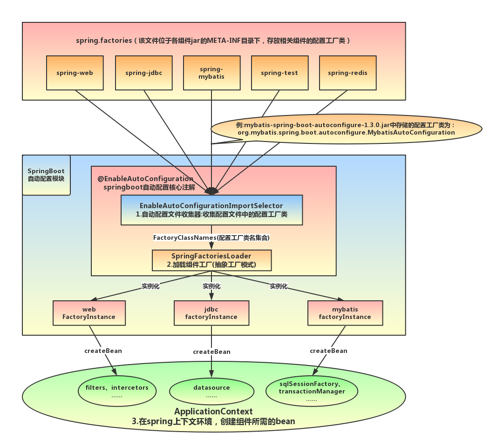
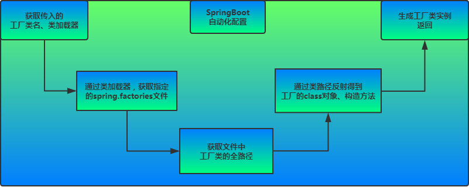
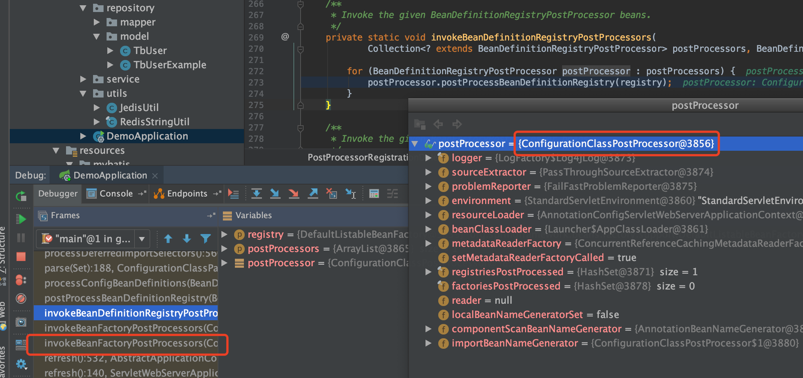
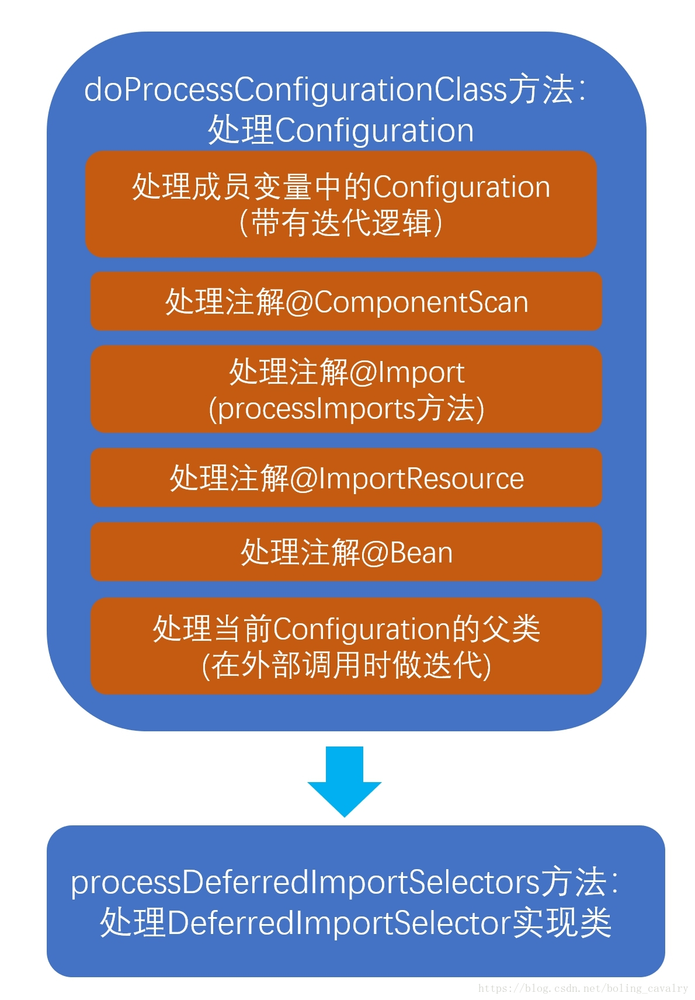
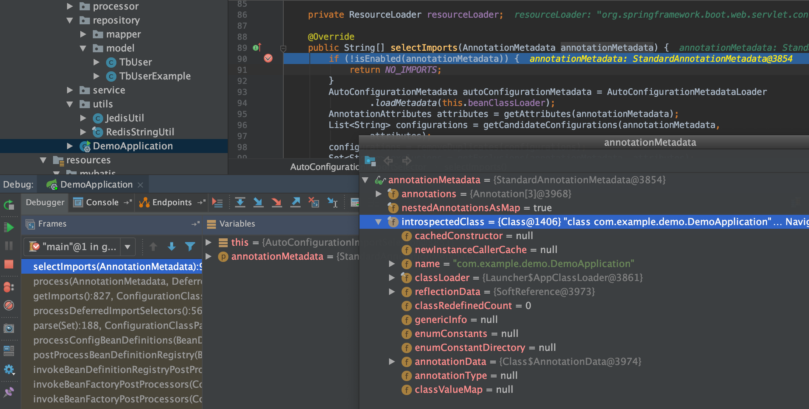
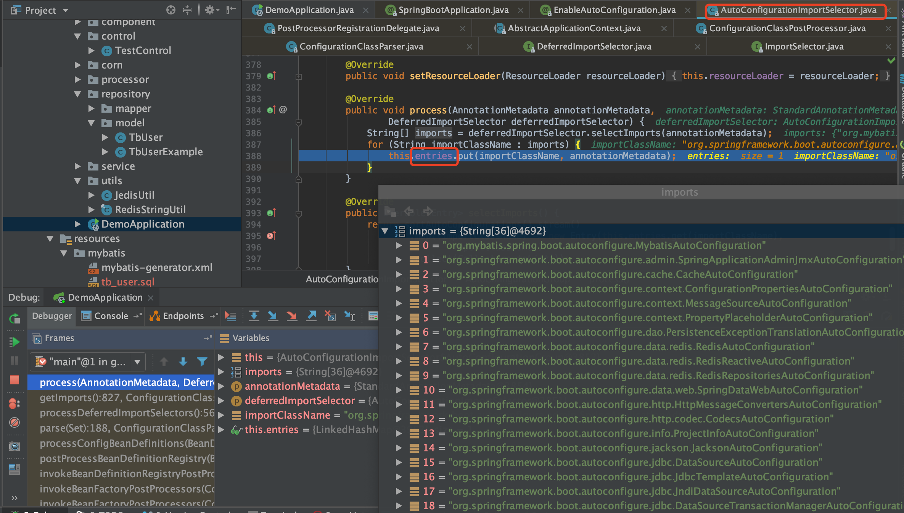
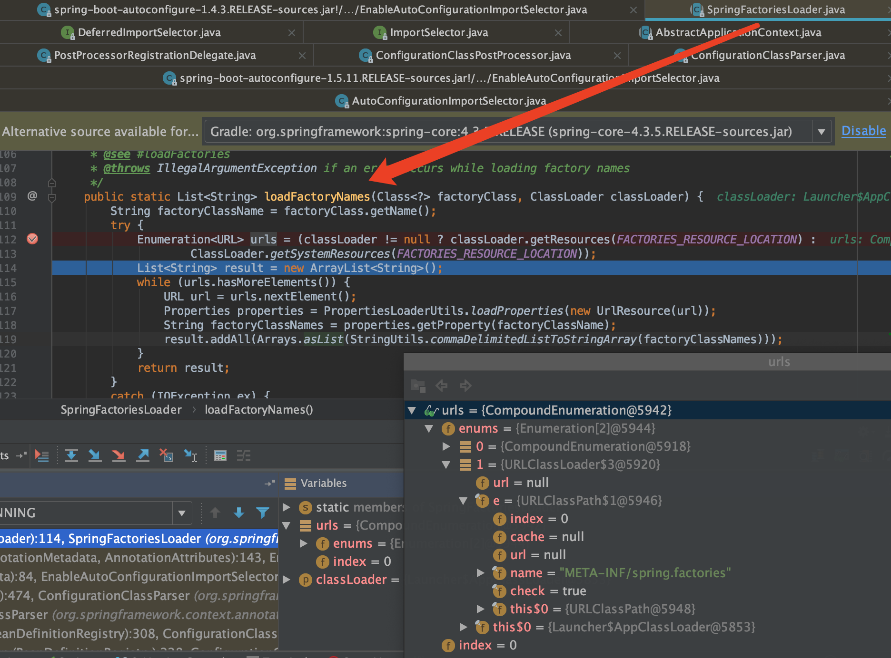
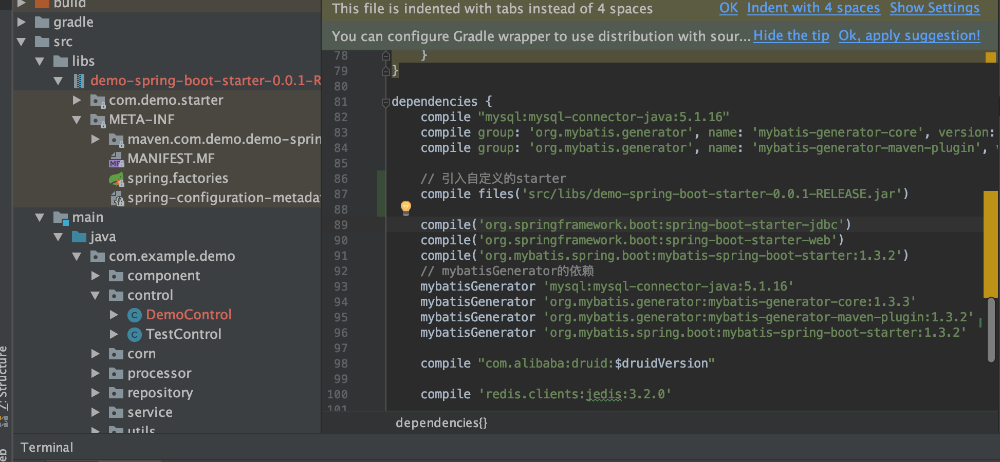
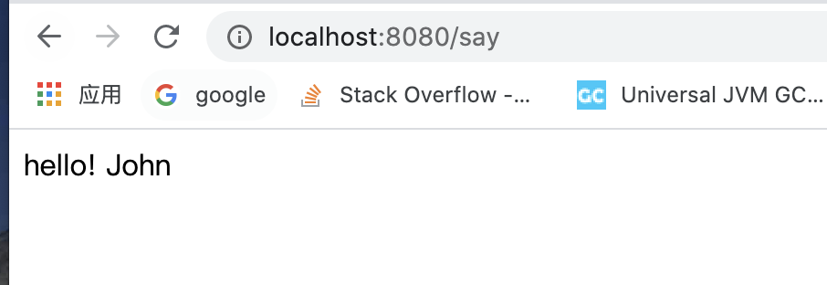

SpringBoot 启动原理
@SpringBootApplication
@MapperScan("com.example.demo.repository")
@EnableScheduling
public class DemoApplication {
public static void main(String[] args) {
SpringApplication.run(DemoApplication.class, args);
}
}
@SpringBootApplication 注解
- @SpringBootApplication
@Target(ElementType.TYPE)
@Retention(RetentionPolicy.RUNTIME)
@Documented
@Inherited
@SpringBootConfiguration
@EnableAutoConfiguration
@ComponentScan(excludeFilters = {
@Filter(type = FilterType.CUSTOM, classes = TypeExcludeFilter.class),
@Filter(type = FilterType.CUSTOM, classes = AutoConfigurationExcludeFilter.class) })
public @interface SpringBootApplication {
- @SpringBootConfiguration
@Target(ElementType.TYPE)
@Retention(RetentionPolicy.RUNTIME)
@Documented
@Configuration
public @interface SpringBootConfiguration {
}
- @EnableAutoConfiguration
@Target(ElementType.TYPE)
@Retention(RetentionPolicy.RUNTIME)
@Documented
@Inherited
@AutoConfigurationPackage
@Import(AutoConfigurationImportSelector.class)
public @interface EnableAutoConfiguration {

mybatis-spring-boot-starter、spring-boot-starter-web等组件的META-INF文件下均含有spring.factories文件，自动配置模块中，SpringFactoriesLoader收集到文件中的类全名并返回一个类全名的数组，返回的类全名通过反射被实例化，就形成了具体的工厂实例，工厂实例来生成组件具体需要的bean。
初始化SpringApplication类
- 加载所有META-INF/spring.factories中的Initializer
- 加载所有META-INF/spring.factories中的Listener
private void initialize(Object[] sources) {
if (sources != null && sources.length > 0) {
this.sources.addAll(Arrays.asList(sources));
}
// 根据标志类javax.servlet.Servlet,org.springframework.web.context.ConfigurableWebApplicationContext是否存在，判断是否是web环境
this.webEnvironment = deduceWebEnvironment();
// 通过SpringFactoriesLoader，获取到所有META-INF/spring.factories中的ApplicationContextInitializer，并实例化
setInitializers((Collection) getSpringFactoriesInstances(
ApplicationContextInitializer.class));
// 通过SpringFactoriesLoader，获取到所有META-INF/spring.factories中的ApplicationListener，并实例化
setListeners((Collection) getSpringFactoriesInstances(ApplicationListener.class));
// 获取执行当前main方法的类，也就是启动类
this.mainApplicationClass = deduceMainApplicationClass();
}

SpringApplication类的run方法
public ConfigurableApplicationContext run(String... args) {
// 启动任务执行的时间监听器
StopWatch stopWatch = new StopWatch();
stopWatch.start();
ConfigurableApplicationContext context = null;
FailureAnalyzers analyzers = null;
// 设置系统java.awt.headless属性，确定是否开启headless模式(默认开启headless模式)
configureHeadlessProperty();
// 通过SpringFactoriesLoader，获取到所有META-INF/spring.factories下的SpringApplicationRunListeners并实例化
SpringApplicationRunListeners listeners = getRunListeners(args);
// 开始广播启动
listeners.started();
try {
// 创建SpringBoot默认启动参数对象
ApplicationArguments applicationArguments = new DefaultApplicationArguments(args);
// 根据启动参数创建并配置Environment(所有有效的配置，如Profile)，并遍历所有的listeners，广播启动环境已准备
ConfigurableEnvironment environment = prepareEnvironment(listeners,applicationArguments);
// 打印启动图案
Banner printedBanner = printBanner(environment);
// 根据标志类(上面有提到过)，创建对应类型的ApplicationContext
context = createApplicationContext();
// 创建异常解析器(当启动失败时，由此解析器处理失败结果)
analyzers = new FailureAnalyzers(context);
// 准备Spring上下文环境
// 在这个方法中，主要完成了以下几件事：
// 1、设置SpringBoot的环境配置(Environment)
// 2、注册Spring Bean名称的序列化器BeanNameGenerator，并设置资源加载器ResourceLoader
// 3、加载ApplicationContextInitializer初始化器，并进行初始化
// 4、统一将上面的Environment、BeanNameGenerator、ResourceLoader使用默认的Bean注册器进行注册
prepareContext(context, environment, listeners, applicationArguments,printedBanner);
// 注册一个关闭Spring容器的钩子
refreshContext(context);
// 获取当前所有ApplicationRunner和CommandLineRunner接口的实现类，执行其run方法
// ApplicationRunner和CommandLineRunner功能基本一样，在Spring容器启动完成时执行，唯一不同的是ApplicationRunner的run方法入参是ApplicationArguments，而CommandLineRunner是String数组
afterRefresh(context, applicationArguments);
// 通知所有listener，Spring容器启动完成
listeners.finished(context, null);
// 停止时间监听器
stopWatch.stop();
if (this.logStartupInfo) {
new StartupInfoLogger(this.mainApplicationClass).logStarted(getApplicationLog(), stopWatch);
}
return context;
} catch (Throwable ex) {
// 启动有异常时，调用异常解析器解析异常信息，根据异常级别，判断是否退出Spring容器
handleRunFailure(context, listeners, analyzers, ex);
throw new IllegalStateException(ex);
}
}
首先遍历执行所有通过SpringFactoriesLoader，在当前classpath下的META-INF/spring.factories中查找所有可用的SpringApplicationRunListeners并实例化。调用它们的starting()方法，通知这些监听器SpringBoot应用启动。
创建并配置当前SpringBoot应用将要使用的Environment，包括当前有效的PropertySource以及Profile。
遍历调用所有的SpringApplicationRunListeners的environmentPrepared()的方法，通知这些监听器SpringBoot应用的Environment已经完成初始化。
打印SpringBoot应用的banner，SpringApplication的showBanner属性为true时，如果classpath下存在banner.txt文件，则打印其内容，否则打印默认banner。
根据启动时设置的applicationContextClass和在initialize方法设置的webEnvironment，创建对应的applicationContext。
创建异常解析器，用在启动中发生异常的时候进行异常处理(包括记录日志、释放资源等)。
设置SpringBoot的Environment，注册Spring Bean名称的序列化器BeanNameGenerator，并设置资源加载器ResourceLoader，通过SpringFactoriesLoader加载ApplicationContextInitializer初始化器，调用initialize方法，对创建的ApplicationContext进一步初始化。
调用所有的SpringApplicationRunListeners的contextPrepared方法，通知这些Listener当前ApplicationContext已经创建完毕。
最核心的一步，将之前通过@EnableAutoConfiguration获取的所有配置以及其他形式的IoC容器配置加载到已经准备完毕的ApplicationContext。
调用所有的SpringApplicationRunListener的contextLoaded方法，加载准备完毕的ApplicationContext。
调用refreshContext，注册一个关闭Spring容器的钩子ShutdownHook，当程序在停止的时候释放资源（包括：销毁Bean，关闭SpringBean的创建工厂等） 注： 钩子可以在以下几种场景中被调用： 1）程序正常退出 2）使用System.exit() 3）终端使用Ctrl+C触发的中断 4）系统关闭 5）使用Kill pid命令杀死进程
获取当前所有ApplicationRunner和CommandLineRunner接口的实现类，执行其run方法 遍历所有的SpringApplicationRunListener的finished()方法，完成SpringBoot的启动。
@EnableAutoConfiguration
EnableAutoConfiguration是一个组合注解，用Import把AutoConfigurationImportSelector导入容器中，SpringBoot启动的时候会加载所有的selector并执行selectImports方法，这个方法会加载META-INF/spring.factories中配置的EnableAutoConfiguration，从而实现加载自动配置
- @EnableAutoConfiguration
@Target(ElementType.TYPE)
@Retention(RetentionPolicy.RUNTIME)
@Documented
@Inherited
@AutoConfigurationPackage
@Import(AutoConfigurationImportSelector.class)
public @interface EnableAutoConfiguration {
- AutoConfigurationPackage：内部是采用了@Import，来给容器导入一个Registrar组件
@Target(ElementType.TYPE)
@Retention(RetentionPolicy.RUNTIME)
@Documented
@Inherited
@Import(AutoConfigurationPackages.Registrar.class)
public @interface AutoConfigurationPackage {
}
- @AutoConfigurationImportSelector
public class AutoConfigurationImportSelector
implements DeferredImportSelector, BeanClassLoaderAware, ResourceLoaderAware,
BeanFactoryAware, EnvironmentAware, Ordered {
AutoConfigurationImportSelector实现了ImportSelector(选择器)和BeanClassLoaderAware(bean类加载器中间件)
ImportSelector
在使用@Import注解来注册bean的时候，Import注解的值可以是ImportSelector或者DeferredImportSelector的实现类，spring容器会实例化这个实现类，并执行其selectImports方法
spring refresh 12 个方法中的invokeBeanFactoryPostProcessors(beanFactory);会执行ConfigurationClassPostProcessor的processConfigBeanDefinitions方法

@Configguration对@ImportResource、@Bean等注解处理之后，会走到selectImports方法处理

ImportSelector 的 selectImports 方法

其中List<String> configurations = this.getCandidateConfigurations(annotationMetadata, attributes);
/**
* Return the auto-configuration class names that should be considered. By default
* this method will load candidates using {@link SpringFactoriesLoader} with
* {@link #getSpringFactoriesLoaderFactoryClass()}.
* @param metadata the source metadata
* @param attributes the {@link #getAttributes(AnnotationMetadata) annotation
* attributes}
* @return a list of candidate configurations
*/
protected List<String> getCandidateConfigurations(AnnotationMetadata metadata,
AnnotationAttributes attributes) {
List<String> configurations = SpringFactoriesLoader.loadFactoryNames(
getSpringFactoriesLoaderFactoryClass(), getBeanClassLoader());
Assert.notEmpty(configurations,
"No auto configuration classes found in META-INF/spring.factories. If you "
+ "are using a custom packaging, make sure that file is correct.");
return configurations;
}
使用SpringFactoryLoader，读取META-INF/spring.factories文件里所配置的EnableAutoConfiguration。经过exclude和filter等操作，最终确定要装配的类
/**
* Load the fully qualified class names of factory implementations of the
* given type from {@value #FACTORIES_RESOURCE_LOCATION}, using the given
* class loader.
* @param factoryClass the interface or abstract class representing the factory
* @param classLoader the ClassLoader to use for loading resources; can be
* {@code null} to use the default
* @see #loadFactories
* @throws IllegalArgumentException if an error occurs while loading factory names
*/
public static List<String> loadFactoryNames(Class<?> factoryClass, @Nullable ClassLoader classLoader) {
String factoryClassName = factoryClass.getName();
return loadSpringFactories(classLoader).getOrDefault(factoryClassName, Collections.emptyList());
}
private static Map<String, List<String>> loadSpringFactories(@Nullable ClassLoader classLoader) {
MultiValueMap<String, String> result = cache.get(classLoader);
if (result != null) {
return result;
}
try {
Enumeration<URL> urls = (classLoader != null ?
classLoader.getResources(FACTORIES_RESOURCE_LOCATION) :
ClassLoader.getSystemResources(FACTORIES_RESOURCE_LOCATION));
result = new LinkedMultiValueMap<>();
while (urls.hasMoreElements()) {
URL url = urls.nextElement();
UrlResource resource = new UrlResource(url);
Properties properties = PropertiesLoaderUtils.loadProperties(resource);
for (Map.Entry<?, ?> entry : properties.entrySet()) {
List<String> factoryClassNames = Arrays.asList(
StringUtils.commaDelimitedListToStringArray((String) entry.getValue()));
result.addAll((String) entry.getKey(), factoryClassNames);
}
}
cache.put(classLoader, result);
return result;
}
catch (IOException ex) {
throw new IllegalArgumentException("Unable to load factories from location [" +
FACTORIES_RESOURCE_LOCATION + "]", ex);
}
}

执行调用栈 & SpringFactoriesLoader
selectImports(AnnotationMetadata):79, EnableAutoConfigurationImportSelector (org.springframework.boot.autoconfigure), EnableAutoConfigurationImportSelector.java
processDeferredImportSelectors():474, ConfigurationClassParser (org.springframework.context.annotation), ConfigurationClassParser.java
parse(Set):184, ConfigurationClassParser (org.springframework.context.annotation), ConfigurationClassParser.java
processConfigBeanDefinitions(BeanDefinitionRegistry):308, ConfigurationClassPostProcessor (org.springframework.context.annotation), ConfigurationClassPostProcessor.java
postProcessBeanDefinitionRegistry(BeanDefinitionRegistry):228, ConfigurationClassPostProcessor (org.springframework.context.annotation), ConfigurationClassPostProcessor.java
invokeBeanDefinitionRegistryPostProcessors(Collection, BeanDefinitionRegistry):270, PostProcessorRegistrationDelegate (org.springframework.context.support), PostProcessorRegistrationDelegate.java
invokeBeanFactoryPostProcessors(ConfigurableListableBeanFactory, List):93, PostProcessorRegistrationDelegate (org.springframework.context.support), PostProcessorRegistrationDelegate.java
invokeBeanFactoryPostProcessors(ConfigurableListableBeanFactory):686, AbstractApplicationContext (org.springframework.context.support), AbstractApplicationContext.java
refresh():524, AbstractApplicationContext (org.springframework.context.support), AbstractApplicationContext.java
refresh():122, EmbeddedWebApplicationContext (org.springframework.boot.context.embedded), EmbeddedWebApplicationContext.java
refresh(ApplicationContext):761, SpringApplication (org.springframework.boot), SpringApplication.java
refreshContext(ConfigurableApplicationContext):371, SpringApplication (org.springframework.boot), SpringApplication.java
run(String[]):315, SpringApplication (org.springframework.boot), SpringApplication.java
run(Object[], String[]):1186, SpringApplication (org.springframework.boot), SpringApplication.java
run(Object, String[]):1175, SpringApplication (org.springframework.boot), SpringApplication.java
main(String[]):32, DruidManagerApplication (com.pinduoduo.bigdata.druid.manager.api), DruidManagerApplication.java
Spring应用启动过程中会执行ConfigurationClassPostProcessor,在使用ConfigurationClassParser分析配置类时，如果发现注解中存在@Import(ImportSelector)的情况，就会创建一个相应的ImportSelector对象， 并调用其方法public String[] selectImports(AnnotationMetadata annotationMetadata)。
使用SpringFactoriesLoader从META-INF/spring.factories提取要加载的Bean

Spring的SpringFactoriesLoader工厂的加载机制类似java提供的SPI机制一样，是Spring提供的一种加载方式。只需要在classpath路径下新建一个文件META-INF/spring.factories，并在里面按照properties格式填写好接口和实现类即可通过SpringFactoriesLoader来实例化相应的Bean。其中key可以是接口、注解、或者抽象类的全名。value为相应的实现类，当存在多个实现类时，用","进行分割。
starter
SpringBoot将所有的常见开发功能，分成了一个个场景启动器（starter），这样我们需要开发什么功能，就导入什么场景启动器依赖即可，eg：
- 需要开发web的功能，那么引入spring-boot-starter-web
- 需要开发模板页的功能，那么引入spring-boot-starter-thymeleaf
- 需要整合redis，那么引入spring-boot-starter-data-redis
- 需要整合amqp，实现异步消息通信机制，那么引入spring-boot-starter-amqp
SpringBoot starter机制
SpringBoot中的starter能够抛弃以前繁杂的配置，将其统一集成进starter，应用者只需要在maven中引入starter依赖，SpringBoot就能自动扫描到要加载的信息并启动相应的默认配置。starter让我们摆脱了各种依赖库的处理，需要配置各种信息的困扰。SpringBoot会自动通过classpath路径下的类发现需要的Bean，并注册进IOC容器。SpringBoot提供了针对日常企业应用研发各种场景的spring-boot-starter依赖模块。所有这些依赖模块都遵循着约定成俗的默认配置，并允许我们调整这些配置，即遵循"约定大于配置"的理念。
自定义starter

- /META-INF/spring.factories
#-------starter自动装配---------
org.springframework.boot.autoconfigure.EnableAutoConfiguration=com.demo.starter.config.DemoConfig
- DemoConfig
//
// Source code recreated from a .class file by IntelliJ IDEA
// (powered by Fernflower decompiler)
//
package com.demo.starter.config;
import com.demo.starter.properties.DemoProperties;
import com.demo.starter.service.DemoService;
import org.springframework.beans.factory.annotation.Autowired;
import org.springframework.boot.autoconfigure.condition.ConditionalOnProperty;
import org.springframework.boot.context.properties.EnableConfigurationProperties;
import org.springframework.context.annotation.Bean;
import org.springframework.context.annotation.Configuration;
@Configuration
@EnableConfigurationProperties({DemoProperties.class})
@ConditionalOnProperty(
prefix = "demo",
name = {"isopen"},
havingValue = "true"
)
public class DemoConfig {
@Autowired
private DemoProperties demoProperties;
public DemoConfig() {
}
@Bean(
name = {"demo"}
)
public DemoService demoService() {
return new DemoService(this.demoProperties.getSayWhat(), this.demoProperties.getToWho());
}
}
- 引用并测试
// 引入自定义的starter
compile files('src/libs/demo-spring-boot-starter-0.0.1-RELEASE.jar')
使用&测试
@RestController
public class DemoControl {
@Resource(name = "demo")
private DemoService demoService;
@GetMapping("/say")
public String sayWhat() {
return demoService.say();
}
}
